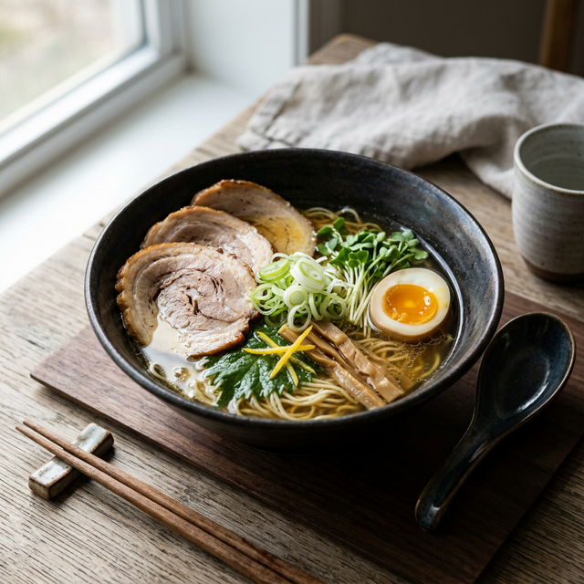
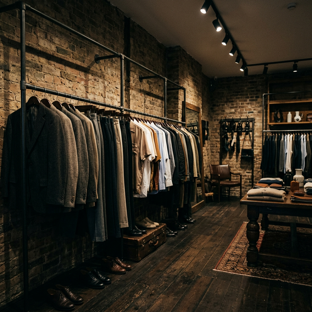
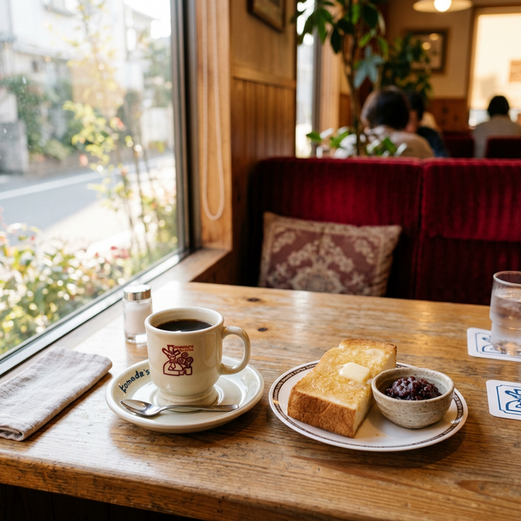

【待つ価値のある一杯】
麺屋あごすけの美学を解き明かす。
全国からゲストが訪れる上越の至宝。一丁の麺、一杯のスープに込められた、妥協のないこだわりとその哲学を紐解く。
READ STORYJOETSU COLLECTIVEは、上越市に息づく洗練された文化、人々、そして食を再発見するためのプラットフォームです。

全国からゲストが訪れる上越の至宝。一丁の麺、一杯のスープに込められた、妥協のないこだわりとその哲学を紐解く。
READ STORY
元スタイリストが欧米直買付。ハイブランド古着が2〜3万円から。古着デビューにも最適な「綺麗め古着」の聖地、上越・本町。
READ STORY
ふかふかのソファ、無料モーニング、コンセント完備の壁際席。地元民が教える、最高に生産的で心地よい朝の過ごし方。
READ STORY